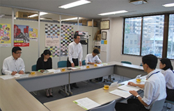

2017年度埼玉県予算編成に向けて要望しました
7月26日(火)9時55分より、埼玉県生協連･会議室にて、県民生活部消費生活課2名、埼玉県生協連4名の出席のもと埼玉県と埼玉県生協連との第1回定期協を開催し、2017年度埼玉県予算編成と行政執行に関する要望書お渡ししました。
1．あいさつ
＜県民生活部消費生活課＞
県の消費者行政にご協力いただき感謝申し上げます。県の予算編成は既存事業の見直しと新5か年計画での少子高齢化社会への対応がテーマとなります。新たな消費生活基本計画づくりをすすめ、消費者教育や高齢者被害防止に対応していきたい。
＜埼玉県生協連＞
幅広いネットワークの構築に積極的に関わり、平和・市民5団体との連携による平和の取り組みや消費者行政充実会議で弁護士や司法書士と一緒に消費者被害防止の取り組みを検討しています。なくす会の事務局を県連が担っており、消費者被害防止サポーターの育成を、県行政と共にすすめていきたい。
2．議題
（1）埼玉県生協連の｢2017年度埼玉県予算編成と行政執行に関する要望｣の説明と、2016年度埼玉県生協連の3つの重点課題等を報告しました。主な内容は以下のとおりです。
 生活協同組合の発展が県民生活の安定にとって重要との位置づけから生活協同組合への支援策を引き続き強めること
生活協同組合の発展が県民生活の安定にとって重要との位置づけから生活協同組合への支援策を引き続き強めること
 食の安全・安心条例にもとづく、食の安全を確保する施策を促進すること
食の安全・安心条例にもとづく、食の安全を確保する施策を促進すること
 消費生活条例に基づく消費者行政の充実をはかること
消費生活条例に基づく消費者行政の充実をはかること
 介護保険制度を、利用者が安心して利用できるよう、引き続き、市町村への指導と援助・協議を進め、国に対しても積極的に働きかけること
介護保険制度を、利用者が安心して利用できるよう、引き続き、市町村への指導と援助・協議を進め、国に対しても積極的に働きかけること
 医療･福祉･高齢者施策を一層強めること
医療･福祉･高齢者施策を一層強めること
 環境対策を引き続き強めること
環境対策を引き続き強めること
 安心して子育てするための支援をさらに強めること
安心して子育てするための支援をさらに強めること
 地震・風水雪害等の災害対策をさらに強めること
地震・風水雪害等の災害対策をさらに強めること
 環太平洋経済連携協定(TPP)に関する国会での議論は、情報公開に基づく議論がされるよう国に求めること
環太平洋経済連携協定(TPP)に関する国会での議論は、情報公開に基づく議論がされるよう国に求めること
（2）県からの報告
昨年度の検査結果からの指摘事項とマイナンバーの管理、ガバナンスとコンプライアンスが着目点であり、障害者差別解消法の具体化を進めることなどが会員生協の指導事項として報告されました。
（3）会員生協からの報告
＜コープみらい＞
東京中野区の地域包括協議会の事例を紹介し、各組織の持つ資源を出し合うネットワークづくりをすすめています。今後5～10年間の大事な取り組みとなります。
（4）懇談
地域力の強化、見守りネットワーク、夕食宅配、高齢者買い物支援等